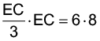

Introdução à unidade
Nesta unidade é retomado o estudo sobre circunferências, apresentando o ângulo inscrito e central, suas relações métricas, como relação entre cordas, secantes e secante e tangente. São abordadas também as relações existentes entre os polígonos regulares inscritos em uma circunferência e circunscritos a ela.
A seguir, relacionamos os objetivos que se pretende atingir ao estudar os conceitos desta unidade.
Capítulo 1 – Ângulos na circunferência
Objetivos:
- Identificar elementos da circunferência como ângulo inscrito e ângulo central.
- Verificar a propriedade de um ângulo inscrito por meio do software.
- Estabelecer relações entre ângulos e circunferências.
Capítulo 2 – Relações métricas na circunferência
Objetivos:
- Identificar os elementos da circunferência: centro, raio, diâmetro e corda.
- Reconhecer as posições relativas entre uma reta e uma circunferência.
- Reconhecer a relação existente entre cordas.
- Reconhecer a relação existente entre secantes.
- Reconhecer a relação existente entre secantes e tangente.
- Aplicar as relações métricas da circunferência na resolução de situações-problema.
Capítulo 3 – Polígonos regulares inscritos na circunferência e circunscritos a ela
Objetivos:
- Identificar quando um polígono é inscrito em uma circunferência ou circunscrito a ela.
- Reconhecer o centro, o raio, o apótema, o ângulo central e o ângulo interno de um polígono regular inscrito em uma circunferência.
- Calcular a medida do lado e a medida do apótema do quadrado, do triângulo equilátero e do hexágono regular em função da medida do raio da circunferência no qual estão inscritos.
Probabilidade e Estatística – Análise de gráficos divulgados pela mídia
Objetivo:
- Analisar e discutir informações de gráficos tendenciosos divulgados pela mídia.
Orientações específicas
Na abertura da unidade, relembramos a relação que permite calcular o comprimento de uma circunferência por meio do Grande Colisor de Hádrons. Aproveite o momento para relembrar quais os elementos de uma circunferência. Como aprofundamento sobre o tema, solicite aos alunos que façam uma busca sobre as pesquisas que vem sendo desenvolvidas no Centro Europeu de Pesquisa Nuclear (CERN).
A respeito do LHC, pode-se propor aos alunos a leitura do seguinte texto:
O Grande Colisor de Hádrons (ou LHC, como é mundialmente conhecido pelas suas iniciais em inglês) foi inaugurado com grande expectativa em setembro de 2008. Ainda estava em fase de ajustes quando problemas de superaquecimento o danificaram nove dias após inaugurado. Voltou a funcionar em novembro de 2009, atingindo sua meta de colisão de prótons acelerados em sentidos opostos com energias recorde de 7 Tev (tera eletron volts), em 30 de março passado.
O LHC é uma imensa e sofisticada máquina onde as partículas são aceleradas em um túnel (localizado na fronteira da França com a Suíça) que fica “enterrado” a 100 metros de profundidade e tem a forma de um anel com 27 km de circunferência. As partículas são aceleradas por campos elétricos e “guiadas” por campos magnéticos (Campos elétricos dão energia para partículas carregadas enquanto campos magnéticos desviam as trajetórias dessas partículas).
As colisões entre as partículas são planejadas para acontecerem em quatro pontos específicos, onde estão localizados os quatro detectores do LHC. O Atlas, mostrado na foto abaixo, e o CMS (iniciais de “Compact Muon Detector”), são detectores genéricos, capazes de detectar inúmeros tipos de partículas; até mesmo partículas desconhecidas. Os outros dois detectores (LHCb e ALICE) são “dedicados” a partículas bem específicas.
Colisões a essas energias podem “criar” certas partículas previstas teoricamente mas jamais observadas. Essas partículas, caso detectadas, podem nos dar informações sobre o que acreditamos ser o “mais íntimo da matéria”, nos ajudando inclusive a entender os instantes iniciais do Universo, onde algumas delas exerceram papel preponderante no mecanismo “das coisas”. Quando se “quebra” prótons, jogando-os um contra o outro com velocidades próximas à velocidade da luz, acreditamos que podemos “criar” um “mini universo” (na realidade “ínfimo universo”), semelhante ao universo real cerca de um nano segundo após o Big Bang.
Fonte: CASAS, Renato Las. O Grande Colisor de Hádrons (LHC). UFMG. Disponível em: http://xingu.fisica.ufmg.br:8087/oap/public/Pas96.htm. Acesso em: 4 jul. 2022.
|
Principais habilidades da BNCC
|
EF09MA11
|
|
Competências
|
CE5, CE8, CG9
|
Neste capítulo iremos retomar algumas relações entre arcos, ângulos centrais e ângulos inscritos na circunferência e ampliar esses conceitos.
Ângulo inscrito
No site: https://cutt.ly/OKA8d0D, você encontra a dedução da importante relação entre as medidas de um ângulo inscrito e seu correspondente ângulo central. Nesse site também é possível interagir com a página por meio de applet de geometria dinâmica.
No link abaixo você encontra um trabalho desenvolvido por Nátalia Furtado e Isabel Andrade. Neste trabalho, realiza-se um estudo com os alunos da turma do 9º ano, de uma escola do Ensino Secundário de Cabo Verde. Nesta comunicação, faz-se uma exposição, descrição e análise das atividades realizadas na referida escola. O objetivo desta pesquisa é conduzir os alunos a demonstrar a propriedade existente entre ângulo inscrito e ângulo central de uma circunferência, que se apoiam no mesmo arco, com recurso ao GeoGebra e, a partir dessa experiência, verificar os conhecimentos adquiridos pelos alunos. Conclui-se que, o software da Geometria Dinâmica é um instrumento indulgente para a formalização da demonstração supramencionada.
Demonstração da propriedade dos ângulos inscrito e central com auxílio do GeoGebra. Revista do Instituto GeoGebra de São Paulo, ISSN 2237- 9657, v.7 n.1, pp 59-69. Disponível em: https://cutt.ly/ELW8eTk. Acesso em: 29 jun. 2022.
Se possível, faça um quadro para que possam inserir o que conseguiram aprender desse capítulo e suas dificuldades. Comente com os alunos que é importante observar condutas e ações realizadas ao longo do capítulo afim de prever ajustes, por exemplo.
Atividade 1
- 3x - 34º = 161º
3x = 161º + 34º
3x = 195º
x = 65º
- x + 12º = 42º
x = 42º - 12º
x = 30º
Atividade 2
2 β = 160°
β = 160/2 β = 80°
Atividade 3
2 β = α 2 . (x + 20°) = 3x - 10°
x = 50°, substituindo na equação temos que a medida do ângulo central é 140° e a medida do ângulo inscrito é 70°
|
Principais habilidades da BNCC
|
EF09MA04, EF09MA11
|
|
Competências
|
CE3, CE8, CG9
|
Neste capítulo estudaremos as relações métricas na circunferência. Relembre com os alunos as relações existentes entre a medida do ângulo central e um arco de circunferência, bem como calcular a medida de um ângulo inscrito em uma circunferência.
É importante relembrar com os alunos as definições e relações de medidas de arcos, ângulo central e ângulo inscrito em uma circunferência.
Os conteúdos sobre o círculo e os triângulos apresentam grandes possibilidades de exploração, através da utilização de materiais concretos e softwares livres de geometria dinâmica construídos para fins didáticos.
Para Eliane Aguiar o uso da tecnologia em sala de aula permite a interatividade entre o aprendiz e o objeto de estudo propiciando uma participação ativa do aluno. A autora ainda afirma que a utilização e a exploração de aplicativos ou softwares computacionais em Matemática podem desafiar o aluno a pensar sobre o que está sendo feito e, ao mesmo tempo, levá-lo a articular os significados e as conjecturas sobre os meios utilizados e os resultados obtidos, conduzindo-os a uma mudança de paradigma com relação ao estudo, na qual as propriedades matemáticas, as técnicas, as ideias e as heurísticas passam a ser objeto de estudo.
OLIVEIRA, Edson Bernardo de. Estudo das relações entre cordas no círculo a partir do Geogebra. UFCG, 2014. Disponível em: http://www.mat.ufcg.edu.br/PROFmat/TCC/Edson.pdf. Acesso em: 04 jul. 2022. (Adaptado).
Encontre soluções
Atividade 1
- 4 ∙ z = 3 ∙ 5
z = 3,75 cm
- 12 ∙ (z - 1) = 8 ∙ z
z = 3 cm
- (z - 2) ∙ (z + 2) = 8 ∙ 17,5
z² - 4 = 140
z² = 144
z = 12 cm
Atividade 2
3x + 12 = 4x
x = 12 cm
AE = x + 4 = 12 + 4 = 16 cm
Atividade 3
- 8 ∙ 3,2 = 4 ∙ y
y = 6,4 cm
- 5 ∙ ( m + 5) = 10 ∙ 4
5m + 25 = 40
m = 3 cm
- 13 ∙ 7 = 10 ∙ x
x = 9,1 cm
- 28 ∙ 12 = z ∙ (z + 10)
336 = z² + 10z
z² + 10z - 336 = 0
z’ = 14 ou z” = -24 (não convém)
z = 14 cm
- x ∙ (x + 4) = 4 ∙ 8
x² + 4x = 32
x² + 4x - 32 = 0
x’ = 4 ou x” = -8 (não convém)
x = 4 cm
Atividade 4
- 40² = 20 ∙ (2r + 20)
1 600 = 40r + 400
40r = 1 200
r = 30 cm
- 6² = r(2r + r)
36 = r ∙ 3r
3r² = 36
r² = 12
Atividade 5
- 6² = x (x + 9)
36 = x² + 9x
x² + 9x - 36 = 0
x’ = 3 ou x” = -12 (não convém)
PA = 3 cm
- y² = 18 ∙ 6
y² = 108

- z² = 6,4 ∙ 2,5
z² = 16
PA = 4 cm
- 10² = 8 ∙ (m + 8)
100 = 8m + 64
8m = 36
m = 4,5 cm
PA = 8 + 4,5 = 12,5 cm
- x² = 4,5 ∙ 8
x² = 36
PA = 6 cm
- 6² = 4 ∙ (x + 4)
36 = 4x + 16
4x = 20
x = 5 cm
PA = 4 + 5 = 9 cm
Atividade 6
Atividade 7
8x = x(2x + 1)
8x = 2x2 + x
2x2 - 7x = 0
x = 0 ou x = 3,5
AB = 2 ∙ 3,5 + 4 = 7 + 4 = 11
|
Principais habilidades da BNCC
|
EF09MA15, EF09MA21, EF09MA22, EF09MA23
|
|
Competências
|
CE2, CE6, CE5, CE7, CG5, CG7, CG9, CG10
|
As relações existentes entre os polígonos inscritos em uma circunferência e circunscritos a ela são apresentadas, levando-se em consideração o estudo prévio das relações trigonométricas. Nas situações exploradas no livro, não são apresentadas fórmulas prontas, que relacionam as medidas do lado do polígono com a medida do apótema e a medida do raio da circunferência. O objetivo é fazer com que os alunos entendam como calcular essas medidas sem depender de fórmulas prontas.
Como construir um triângulo equilátero sabendo a medida do lado
Passo a passo:
- Início.
- Marque o ponto A (vértice).
- Crie um seguimento com a medida do lado do polígono.
- Construa uma circunferência de raio e centro em A.
- Construa uma reta perpendicular a passando por A.
- Marque o ponto C na intersecção da circunferência com a reta perpendicular.
- Trace o seguimento .
- Construa uma circunferência de raio e centro em B.
- Construa uma circunferência de raio e centro em C.
- Marque o ponto D na intersecção das circunferências.
- Trace os seguimentos, e .
- O quadrado está pronto.
Na sequência, estimule os alunos a calcular a medida do apótema e a medida do lado de um polígono regular usando as relações trigonométricas. O objetivo é que eles não decorem as fórmulas e, sim, aprendam a realizar os cálculos, utilizando os conhecimentos adquiridos anteriormente.
Triângulo equilátero inscrito em uma circunferência
ℓ: medida do lado do triângulo.
a: medida do apótema do triângulo.
r: medida do raio da circunferência circunscrita.
Vamos considerar o triângulo retângulo OMC:
Quadrado inscrito em uma circunferência
ℓ: medida do lado do quadrado.
a: medida do apótema do quadrado.
r: medida do raio da circunferência circunscrita.
Considere o triângulo retângulo OMF.
Hexágono regular inscrito em uma circunferência
ℓ: medida do lado do hexágono.
a: medida do apótema do hexágono.
r: medida do raio da circunferência circunscrita.
Vamos considerar o triângulo retângulo OMD.
Encontre soluções
Atividade 1
Determinando a
medida do apótema:
Atividade 2
A medida do lado do
quadrado é o dobro da
medida do apótema.
Atividade 3
A = 16²
A = 256 cm²
Atividade 4
A medida do raio é igual
à medida do lado do hexágono.
r = 12 cm
Determinando o apótema:
Atividade 5
Determinando o perímetro:
Atividade 6
- r = 30 cm
Atividade 7
Atividade 8
Atividade 9
A medida do lado do quadrado é o dobro da medida do apótema:
O diâmetro da circunferência circunscrita é igual à medida da diagonal do quadrado inscrito a ela. Assim:
Logo, o raio da circunferência é:
r = 16 cm
Determinando a medida do apótema do hexágono inscrito:
Atividade 10
A medida do raio da circunferência circunscrita ao triângulo equilátero é a medida do lado do hexágono.
Atividade 11
Determinando a medida do apótema do triângulo:
Atividade 12
- r = 6 cm
- 12 cm
Atividade 13
Temos um triângulo retângulo
cujos catetos medem 4 dm e 3 dm.
Assim:
AB² = 4² + 3²
AB² = 16 + 9
AB² = 25
AB = 5 dm
Atividade 14

Perímetro:
Atividade 15

O apótema do triângulo menor mede 5 - 1 = 4 m.
Atividade 16
Observe que OC é um raio do círculo. Temos que OC = AB =
= 5 cm por serem as diagonais do retângulo OABC. Logo, o diâmetro é 10 cm.
Probabilidade e estatística — Análise de gráficos divulgados pela mídia
Atualmente, entender as informações que são vinculadas nos meios de comunicação é muito importante. Essas informações, muitas vezes, vêm acompanhadas de listas, tabelas e gráficos de vários tipos. Por isso, é necessário entendermos o significado desses dados e, ao mesmo tempo, sabermos interpretar os diferentes instrumentos que são usados para representá-los. Caso tenha disponibilidade, podemos começar a utilizar softwares de planilha para representar gráficos com as informações que constam nas tabelas.
Solicite aos alunos que analisem e interpretem as informações apresentadas, se elas estão claras e se podem induzir a uma interpretação equivocada. Essa análise dos gráficos divulgados pela mídia é de extrema importância para a formação de um cidadão crítico e consciente de seus direitos.
Para ajudar na compreensão do assunto, leia o seguinte texto aos alunos:
A necessidade de financiamento externo de certo país se obtém somando-se ao déficit em transações correntes o valor estimado do déficit dos investimentos diretos líquidos, ambos da forma como contabilizados no balanço de pagamentos do país em questão. No caso do balanço de pagamentos do Brasil, a necessidade de financiamento externo é: saldo em transações correntes + investimento direto, ambos retirados do balanço de pagamentos.
CYSNE, Rubens Penha; GRAHL, Paulo Gustavo. Brasil 2007: Uma Análise das Contas Externas. Editora FGV, Rio de Janeiro, 2007. Ilustração 1.8. Disponível em: https://epge.fgv.br/users/rubens/static/contas-externas/Ilustra%C3%A7%C3%A3o%201_8.html. Acesso em: 5 jul. 2022.
Após a interpretação do gráfico, promova uma discussão com os alunos a respeito do destino dos impostos e quais mudanças eles acreditam que sejam necessárias.
Atividade 4
Média: 102,5.
Mediana: 68,5.
Em caso de dúvidas, explique aos alunos que a barra em azul representa o valor das reservas, em dólares, de cada país. Em contrapartida, a outra coluna, a mais clara, representa o valor que necessita de investimento externo.
Relembre
Atividade 1
2x ∙ (4x - 3) = x ∙ (3x - 1)
8x² - 6x = 3x² - x
8x² - 3x² - 6x + x = 0
5x² - 5x = 0
x² - x = 0
x’ = 1 ou x” = 0 (não convém)
CD = 4 ∙ 1 - 3 + 2 ∙ 1
CD = 4 - 3 + 2
CD = 3
Atividade 2
Atividade 3
PB² = PC ∙ PA
(2PA)² = (18 + PA) ∙ PA
4PA² = 18PA + PA²
3PA² - 18PA = 0
PA² - 6PA = 0
PA’ = 6 ou PA” = 0 (não convém)
Atividade 4
10 ∙ 6 = 7 ∙ (x + 7)
60 = 7x + 49
7x = 11
Atividade 5
Determinando o lado do quadrado:
O lado do hexágono é r. Assim,
determinando a razão, temos:

Atividade 6
r = 6 cm
d = 12 cm
Atividade 7
r = 16 cm
Lado do hexágono = 16 cm
Atividade 8
Atividade 9

AE ∙ EC = ED ∙ EB

EC² = 144
EC = 12 cm
AC = AE + EC
AC = 4 + 12
AC = 16 cm